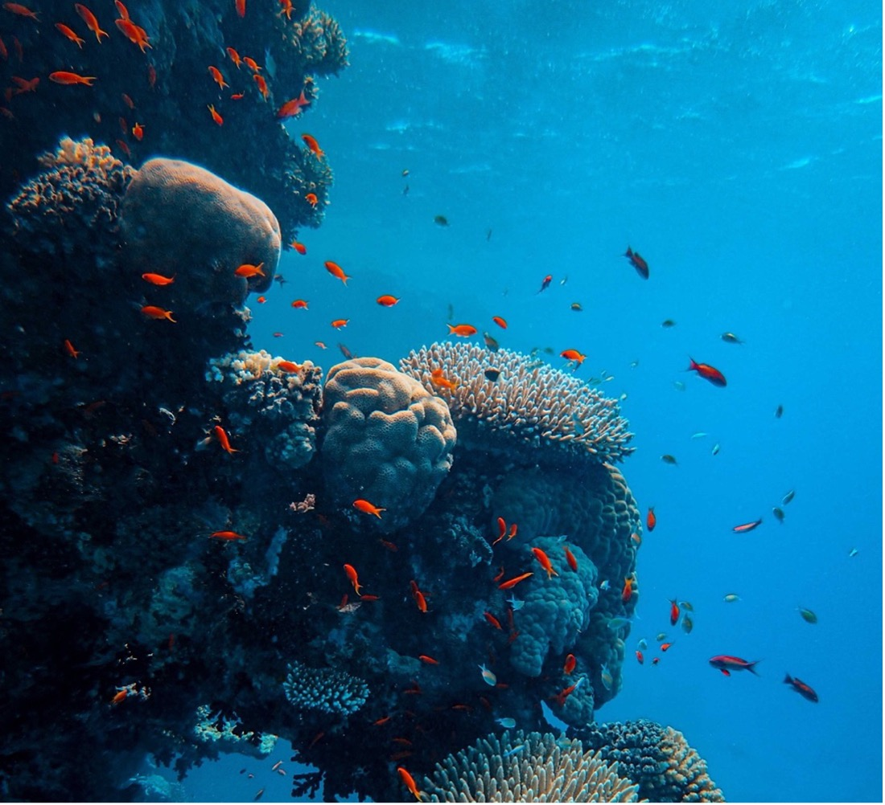

Latest climate change projections reveal higher risks for marine ecosystems
Author: Dr Andrea Bryndum-Buccholz; Memorial University of Newfoundland and Labrador, Canada
Policymakers, scientists, climate experts, and environmental activists came together for the 26th United Nations Climate Change Conference (COP26) to negotiate agreements to address our Earth’s climate emergency. On their agenda: curbing emissions to avoid global warming beyond 1.5°C. Efforts to achieve this will have to include our vast and diverse ocean ecosystems, and COP26 addressed both the climate and biodiversity crises as one, including the protection of marine ecosystems. Climate change caused by humans is a growing threat to marine ecosystems; its impacts projected to intensify for marine animals, including increased mortality and changing distributions, interactions, and biomass. Adding other stressors, like overfishing, the societal benefits from the ocean and marine conservation efforts are also under threat.
To assess future climate change impacts on marine ecosystems and the wider consequences for human wellbeing modeling studies are required. Here, the so-called ensemble model approach has become the gold standard in climate-impact sciences; an approach that combines different models into ensembles that give valuable insights and confidence measures for potential future climate change impacts. For the ocean, the Fisheries and Marine Ecosystem Modeling Project (Fish-MIP) provide a platform for global and regional marine ecosystem model ensembles. Initiated about 10 years ago, it is now in its second iteration, where an ensemble of nine global ecosystem models projects marine ecosystem changes throughout the 21st century under new and improved climate scenarios.
Each marine ecosystem model within the Fish-MIP ensemble is coupled to a climate model from the Coupled Model Intercomparison Project (CMIP6) that provides improved projections of, for example, ocean temperature, important ocean currents, and primary production. The benefit of FISH-MIP and the ensemble approach is that through combining different marine ecosystem models, we can get a broader representation of ecosystem dynamics, and systematically assess uncertainties associated with different model structures and assumptions. Being able to do this, facilitates any advice on future states of marine ecosystems and the fisheries millions of people rely on every day.
The improved model ensemble highlights an increased climate risk for marine ecosystems. More specifically, the improved projections showed that with warming waters and changing habitats, global biomass of marine animals will decline more drastically than previously assessed. Those declines are higher under the climate change scenario that tracks the trajectory we are on today. Declines under a climate change scenario, in line with the Paris Agreement from 2015, that would limit global warming to 1.5°C by the end of the 21st century, are much weaker, emphasizing the importance to curb global emissions and mitigate wider ecosystem changes and societal consequences.
The study sheds light on future pathways towards ocean sustainability and contributed to the sixth Intergovernmental Panel on Climate Change Assessment Report; a report that provides governments at all levels with evidence-based information they can use to develop effective climate policies that ultimately affects everyone on this planet.
Read the publication here: Tittensor et al. 2021 Nature Climate Change